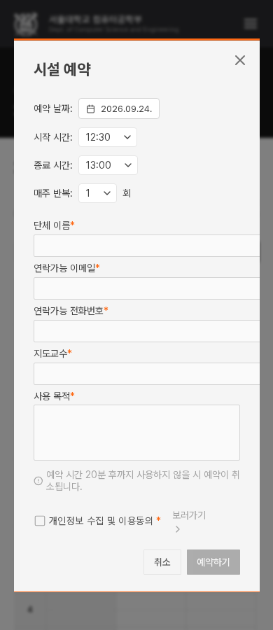
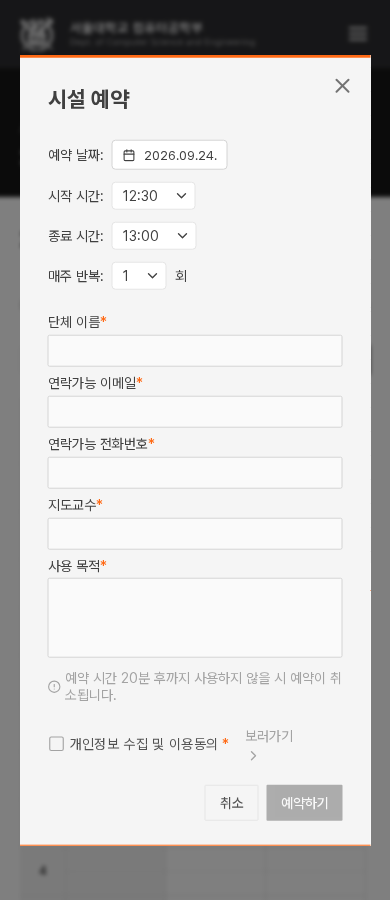

폼·모달을 함께 검토하기
판단 2개 · 두 제안 모두 앱 미적용크기 조정 하나마다 멈추지 않고, 같은 폼을 쓰며 만나게 되는 문제를 묶었다. 기존 계획의 순서와 완료 기준은 유지한다.
먼저, 지금까지 확정한 내용
브랜드 주황 #ff6914 + 흰 글자, 본문 14px / 28px, 글 제목 20px / 600을 유지한다. 주요 실행은 짙은 중립색, 오류 문장은 기존 red-600을 사용한다. 입력에 추가 초점 외곽선을 넣지 않는다.
이번 적용 완료 — DS-025: 영어 통합검색 태그를 최소 160px 열에 정렬했다. 한·영 세 폭의 6장면이 승인 견본과 일치했고, 선택·해제와 검색 결과 연결을 확인했다. 실제 적용 견본.
기준 정리: 실행 버튼 1px·기본 입력 2px·보조 입력 4px 모서리 등은 역할에 따라 기존값을 유지한다. 모든 모서리·그림자를 하나로 통일하지 않는다. 역할과 예외 · 정한 값이 코드에 연결된 범위.
1. 예약 입력칸의 폭 · S-Q1
문제: 390px 화면에서 창 안쪽은 295px인데 네 입력칸이 352px로 고정되어 오른쪽이 잘린다.
추천: 넓은 화면에서는 기존 352px를 유지하고, 좁은 창에서는 안쪽 폭에 맞춰 줄인다. 글자·높이·간격·예약 동작은 그대로다. 데스크톱 한·영 전후 이미지는 동일하다.
현재 · 오른쪽 잘림

추천 · 가용 폭 안에 맞춤

2. 오류 안내를 어디에 보여줄까? · FO-Q1
문제: 긴 공지 폼에서 제목·내용 오류가 맨 아래 버튼 옆에만 나온다. 위쪽 입력으로 돌아가면 오류 안내가 멀리 떨어진다. 실제 빈 제출 후 자동으로 위쪽 필드에 초점이 이동하지 않는 것도 확인했다.
A 추천: 하단 요약을 유지하면서 해당 필드 아래에도 같은 문장을 표시한다. 수정할 위치에서 이유를 읽을 수 있다. 오류일 때만 필드 아래 약 20px가 늘어나고 안내가 중복된다.
B: 필드는 그대로 두고 하단 안내를 버튼 위의 독립된 줄로 옮긴다. 버튼과 안내의 공간을 분리하지만 위쪽 필드와 멀다는 점은 남는다.
두 안 모두 기존 13px·오류색·문구를 사용한다. 입력 경계·배경·초점 모양은 유지하며, 검증 규칙·저장·자동 이동 동작은 이번 선택에 포함하지 않는다. A는 필드 아래 4px 간격을 더한 비교다.
이번에 답할 두 가지
- 예약창: 추천처럼 좁은 창 안에 입력칸을 맞춰도 될까?
- 오류 안내: A(필드 아래에도 표시)와 B(하단 안내만 분리) 중 어느 쪽이 좋을까? 추천은 A다.
예: “1 적용, 2 A”. 기존 유지나 다른 조합도 가능하다. 합의 후 관련 사용처 적용·검증을 이어가고, 다음 질문도 관련 안건을 모아 준비한다.